RouterOS ACME issues and renews certificates through Cloudflare DNS and installs them on your routers over the encrypted RouterOS API. You enroll each router once from the web UI. After that it runs by itself.
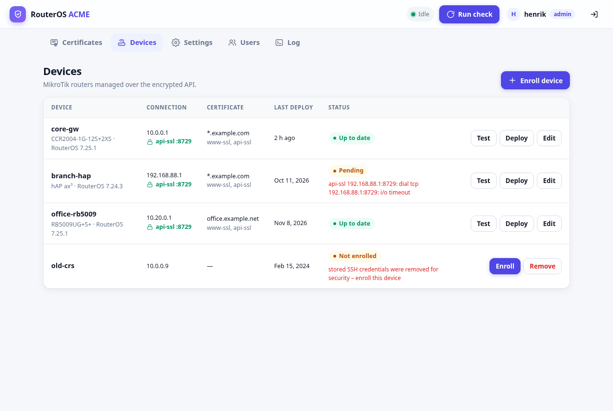
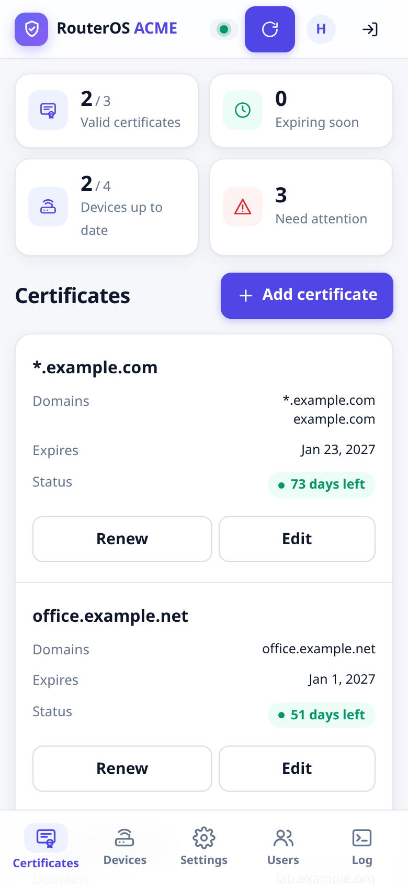
It replaces a container per router with a single service that knows all your certificates and devices. Inspired by foorschtbar/routeros-letsencrypt.
Let's Encrypt validates through a Cloudflare TXT record, so wildcards work and nothing has to be open to the internet. One wildcard can serve many routers.
Connect a router once with an admin login. It gets a restricted service account, and from then on everything goes over api-ssl with a pinned certificate.
Every 12 hours it renews what expires within 30 days and pushes it to www-ssl, api-ssl, or anything else you script.
Admins change things; viewers can only look. Admins must use two-factor authentication. Invite people by e-mail and let them choose their own password.
One summary e-mail when a renewal or deploy fails, a certificate is about to expire, or a new one was installed.
No admin passwords are stored, private keys never land in a router log, and secrets are encrypted at rest.
RouterOS ACME sits between Let's Encrypt, your DNS and your routers. Routers never talk to Let's Encrypt themselves.
You need Docker with Compose, access to the GitHub repository, a domain in Cloudflare and a MikroTik router on RouterOS 7.
The image is published privately on GitHub's container registry, for amd64, arm64 and arm/v7. Docker picks the right one.
Log in once with your GitHub username and a token that can read packages, then start it with docker-compose.yml from the repository. Configuration and certificates live in ./data.
docker-compose.yml
./data
On first start the log prints a one-time setup code.
# once: a GitHub token with read:packages as password docker login ghcr.io -u <github-username> # with docker-compose.yml from the repository docker compose pull docker compose up -d docker compose logs | grep "Setup code" # ==> FIRST RUN: open the web UI and create the admin account. # Setup code: m3jnTYG1EUQm
Open http://<host>:8080, enter the setup code and choose a username and password. The setup code makes sure nobody else on your network can claim the instance first.
http://<host>:8080
Next, scan the QR code with an authenticator app to turn on two-factor authentication, which every admin needs, and save the 10 recovery codes.
Prefer no setup page? Set ADMIN_USER and ADMIN_PASSWORD for the first start.
ADMIN_USER
ADMIN_PASSWORD
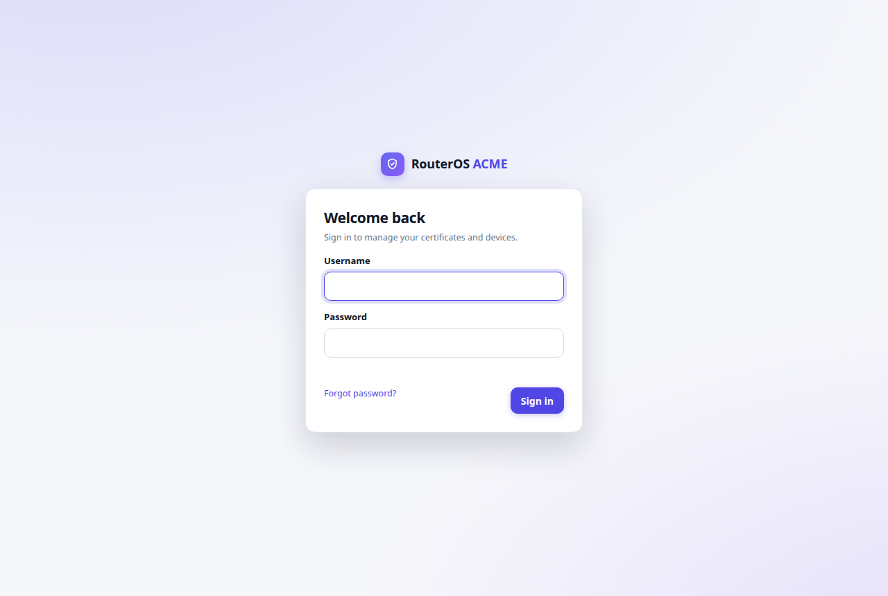
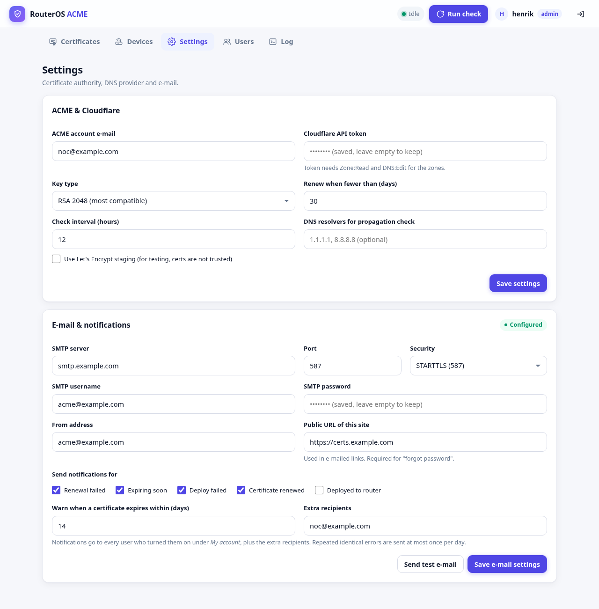
List the names, one per line: *.example.com and example.com for example. It is issued in the background, and the overview shows how many days each certificate has left.
*.example.com
example.com
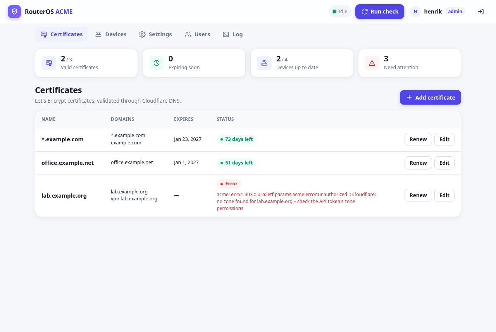
Connect with the router's address and an admin SSH login. Review the identity, model and SSH host key, confirm it's your device, and see exactly what will change. Enroll and follow each step as it happens.
The admin login is used once and never saved. If the final check fails, the new account is removed again.
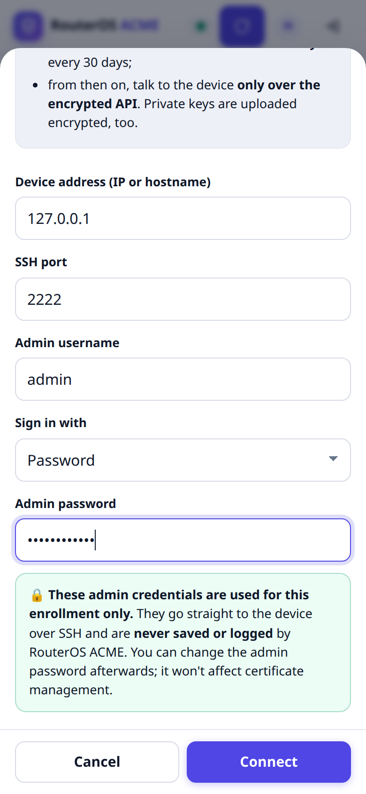
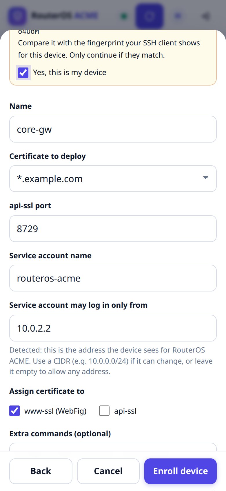
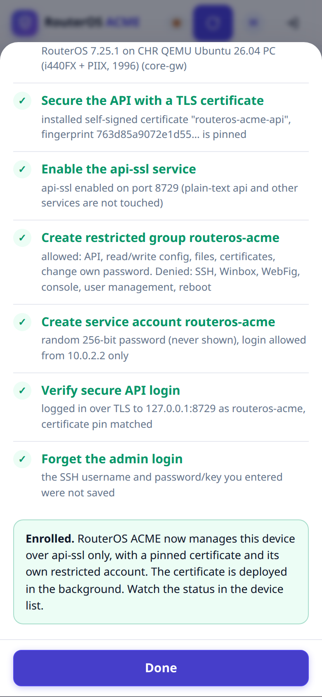
Right after enrollment the certificate is installed. The device turns Up to date, and the log shows each action. From now on renewals and deploys happen on their own.
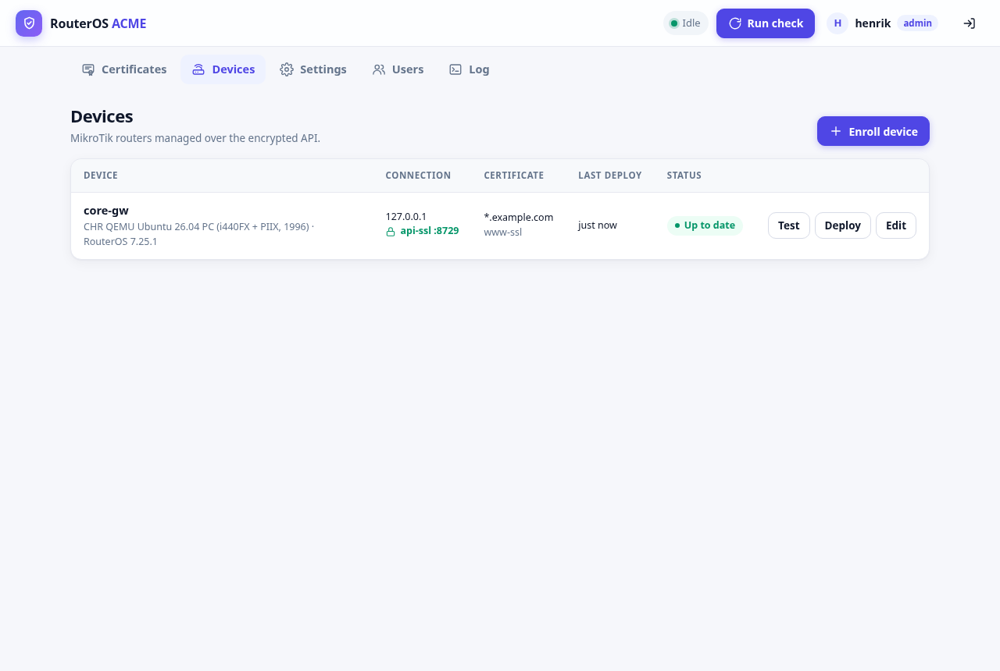
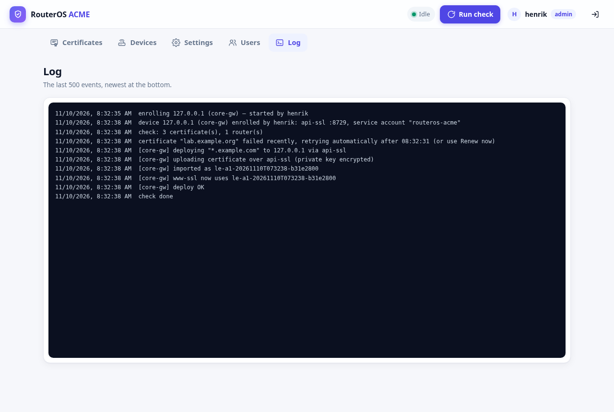
The goal is that RouterOS ACME can do one job on your routers and nothing else, with no human password to leak.
A code from an authenticator app, or a passkey (Face ID, fingerprint), at every sign-in, and again before enrolling a device, changing DNS credentials or adding admins. Recovery codes cover a lost phone.
The SSH login is used for enrollment only, then discarded. Changing your admin password later changes nothing.
api-ssl's certificate fingerprint is pinned at enrollment. An impostor device is refused, even on a bare IP address.
API only. No SSH, Winbox, WebFig or console, no user management, no reboot. Login limited to this server's address.
256 random bits, encrypted at rest, rotated automatically every 30 days. RouterOS's API has no key login, so this is the passwordless equivalent.
RouterOS logs uploaded file contents, so private keys are uploaded encrypted with a one-time passphrase.
Five wrong passwords or codes from one address lock it out for five minutes. Behind a proxy that's the real client address.
Removing a device can also delete its service account from the router, using an admin login once.
routeros-acme-api
routeros-acme
# the group's policies, as set on the router /user group add name=routeros-acme policy=\ api,read,write,ftp,sensitive,password,\ !local,!telnet,!ssh,!reboot,!policy,!test,\ !winbox,!web,!sniff,!romon,!rest-api
Renews certificates with fewer than 30 days left, then deploys to every router that doesn't have the current one. Both numbers are adjustable.
One message per check: failures, expiry warnings (14 days by default) and renewals. The same error is sent at most once a day.
Each router's service password is replaced automatically. A crash halfway through can't lock the app out.
Viewers see everything but can't change anything. The last admin can't be demoted or deleted.
Invite by address and role. The person picks their own username and password. Forgot-password links last one hour.
Who did what and when: logins, enrollments, deploys, user changes. Viewers can read it too.
A bottom tab bar, stacked cards and bottom-sheet dialogs. Light and dark follow your phone's setting.
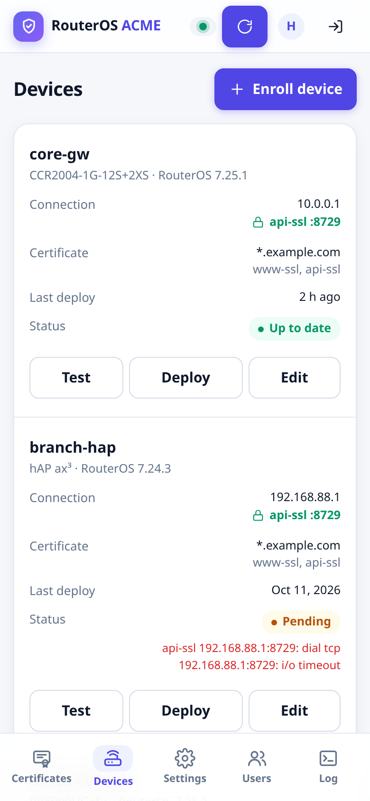
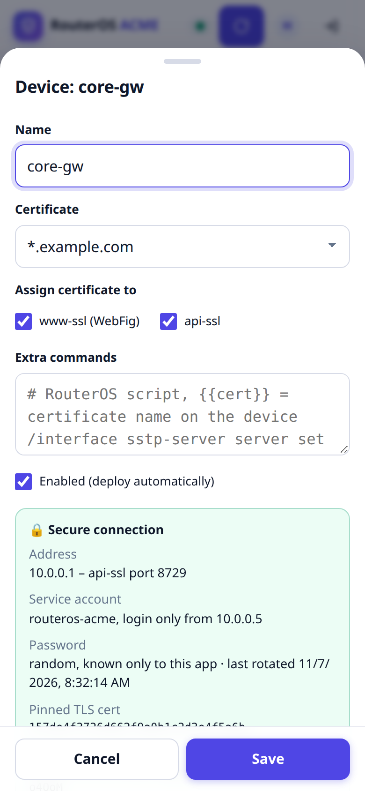
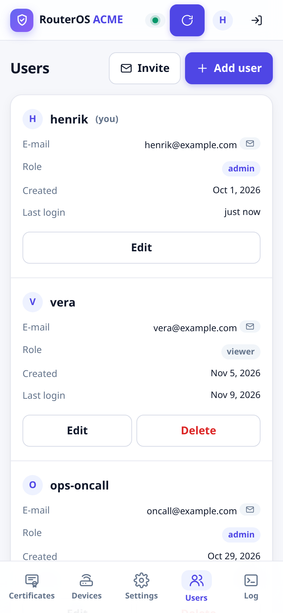
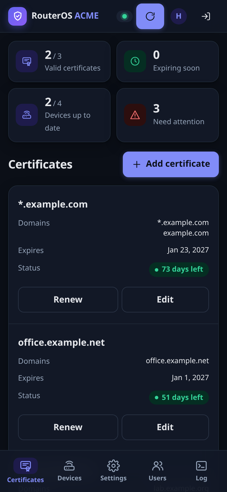
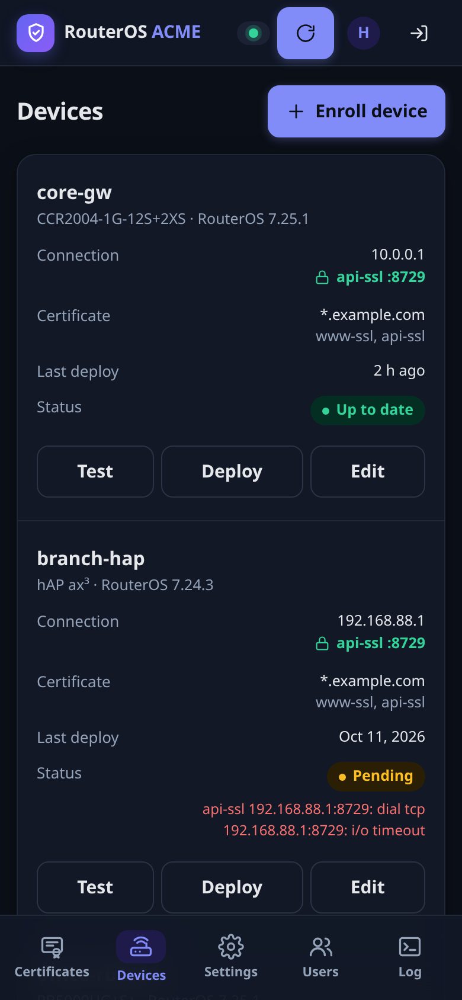
Every release is published as an image for all three architectures, built and tested by GitHub Actions. The version you run is shown in the footer of the web UI.
# pin the tag in docker-compose.yml, # e.g. image: …/routeros-acme:1.3.0 docker compose pull docker compose up -d docker compose logs | head -1 # RouterOS ACME 1.3.0
data/
Everything else is set in the web UI and stored in data/config.json.
data/config.json
private
/certs
secret.key
docker buildx build --platform linux/amd64,linux/arm64,linux/arm/v7 -t routeros-acme .